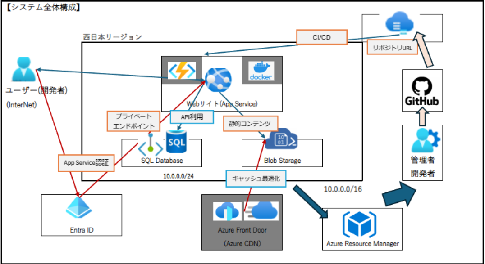

Portfolio
[Az305・Sc100] SaaS向けAPI基盤のクラウド設計と構築
要件定義から設計ドキュメントまで一貫して対応し、クラウドアーキテクチャ設計スキルの習得を目的として、模擬シナリオに対するソリューション実施。
Azure上におけるAPI認証基盤を設計し、認証・認可にはOAuth 2.0/OpenID Connectによるトークン認証を採用。
WAFやKey Vaultを活用して、セキュリティ強化を意識することで、システム全体を通して、認証基盤の構築に必要な基礎的対応力を習得。

[Az305] Azure上でのWebサイト基盤構築
Azureを基盤とし、インフラ構築からフロントエンド、データベース連携までを含むホットペッパーグルメ風のWebサイトを構築。
GitHub ActionsによるCI/CDパイプラインを導入し、App Service認証やプライベートエンドポイントを用いてセキュリティを強化。
クラウドサービスの連携と構築の流れを一通り経験し、基礎的な設計・実装スキルを体系的に習得。

Contact
お問い合わせは、SNSまたはメールにてご連絡ください。